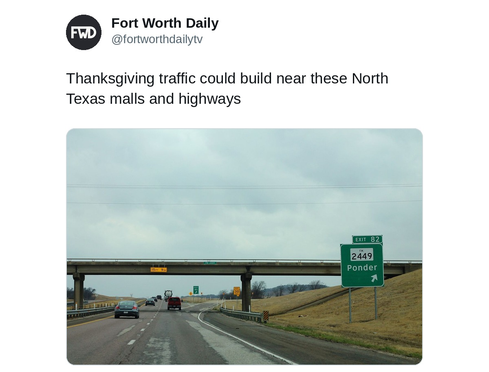

FWD
Fort Worth Daily
Just now · 🌎 · traffic · template writer
Just now · 🌎 · traffic · template writer
Expect midday congestion near Dallas, Grand Prairie, and Fort Worth. Highways include I-30, I-20, I-35W, and US-75. As North Texans hit the roads for Thanksgiving meals, Black Friday shopping and weekend outings. Regional traffic radar data from the North Central Texas Council of Governments identified several locations around the area with the most congestion on Thanksgiving Day and throughout the holiday weekend.

FWD
story + scoring
{
"source": "NBC 5 DFW",
"kind": "rss",
"score": 0.3467,
"relevance": 3,
"url": "https://www.nbcdfw.com/news/local/dallas-morning-news/thanksgiving-traffic-could-build-near-these-north-texas-malls-and-highways/4110260/",
"image_license": "wikimedia-cc",
"image_credit": "Photo: formulanone from Huntsville, United States via Wikimedia Commons (CC BY-SA 2.0)"
}